Справочник по MongoDB · модуль 1 · подключение и первые данные
Глава 1.0
Учебные базы:
скачать и загрузить
Все примеры, числа и кадры справочника получены на одних и тех же данных: четыре учебные базы и песочница. Данные лежат в репозитории практик на GitHub в виде JSON-файлов. В этой главе — как их скачать, как загрузить в MongoDB тремя способами и как проверить, что всё на месте. Главу проходят один раз, до первых запросов.
- Категория
- Подготовка рабочего места
- Уровень
- Начальный
- Связанные темы
- 1.1 Сервер, база, коллекция · 1.1а Стенд в Docker
- Зачем это знать
- Чтобы примеры из глав давали у вас те же числа, что в книге
github.com/MaximBytecamp/mongodb-practice → stend/seed
§1Какие базы нужны
На сервере должно оказаться пять баз и двенадцать коллекций. Четыре базы — эталонные: на них построены все примеры, и менять их нельзя. Пятая, sandbox, — песочница: в ней делают упражнения, вставляют, обновляют и удаляют.
| База | Коллекция | Документов | Что внутри |
|---|---|---|---|
shop | products | 21 | Интернет-магазин: товары, заказы с позициями, покупатели. Основная база модуля 1 |
orders | 120 | ||
customers | 20 | ||
hh | companies | 8 | Найм: компании, вакансии, резюме и собеседования. На ней разбирается язык фильтров |
interviews | 60 | ||
resumes | 9 | ||
vacancies | 8 | ||
logs | events | 1200 | Журнал запросов сервиса: время, маршрут, статус, длительность. Индексы и группировки |
org | categories | 10 | Оргструктура и дерево категорий: иерархии и связи |
employees | 15 | ||
sandbox | products | 21 | Песочница: копия товаров для упражнений и складской учёт для КТ-01 |
warehouse | 21 |
Числа в третьей колонке пригодятся в §8: по ним проверяют, что загрузка прошла целиком.
§2Файлы с данными
Данные лежат в папке stend/seed репозитория практик: по одному JSON-файлу на коллекцию. Там же скрипт generate.py, который эти файлы собирает. Запускать его не нужно: файлы уже готовы, и у всех они одинаковые.
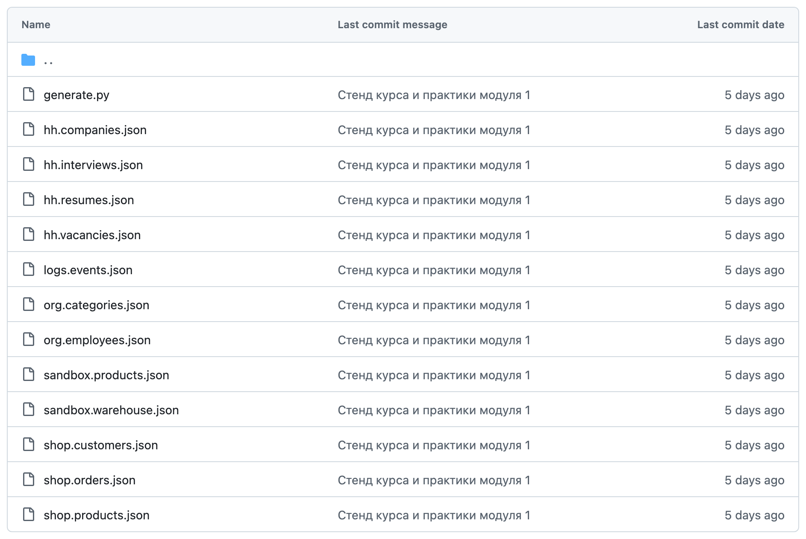
mongodb-practice/stend/seed — двенадцать файлов, двенадцать коллекцийИмя каждого файла говорит, куда его загружать:
shop.orders.json
shop.orders.json→база shop→коллекция orders→120 документов
Внутри файла — массив документов в квадратных скобках. Так начинается shop.products.json:
[
{
"_id": "p-001",
"sku": "SKU-NB-001",
"title": "Ноутбук Lenovo IdeaPad 3",
"brand": "Lenovo",
"category": "ноутбуки",
"price": 42990,
"specs": ["15.6\"", "8 ГБ", "SSD 512 ГБ"],
"stock": [{ "warehouse": "Санкт-Петербург", "qty": 5 }],
"rating": 4.2,
"reviews": 57,
"added": { "$date": "2026-02-05T00:00:00.000Z" }
},
…
Обратите внимание на поле added. В обычном JSON нет типа «дата», поэтому она записана особым объектом { "$date": "…" } — это формат Extended JSON. И mongoimport, и Compass понимают его и сохраняют поле как настоящую дату, а не как вложенный документ. Если открыть файл и «поправить» такую запись руками, в базе окажется уже не дата, и запросы по времени из следующих глав перестанут работать.
§3Скачать репозиторий
Скачивается весь репозиторий: кроме данных, в нём скрипты загрузки, стенд для Docker и практические работы. Если установлен Git — одной командой:
git clone https://github.com/MaximBytecamp/mongodb-practice.git
cd mongodb-practice
Без Git — архивом. На странице репозитория нажмите зелёную кнопку Code и в конце меню — Download ZIP:
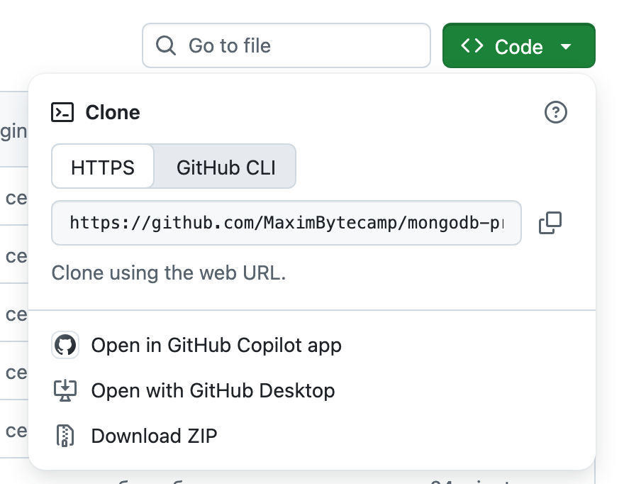
git clone, внизу Download ZIPАрхив называется mongodb-practice-main.zip. Распакуйте его и перейдите в папку:
cd $HOME\Downloads\mongodb-practice-main\mongodb-practice-main ls stend\seed # двенадцать .json и generate.py
cd ~/Downloads/mongodb-practice-main ls stend/seed # двенадцать .json и generate.py
cd ~/Downloads unzip mongodb-practice-main.zip cd mongodb-practice-main ls stend/seed # двенадцать .json и generate.py
Дальше все команды выполняются из этой папки — корня репозитория.
§4Какой способ загрузки выбрать
- сервер установлен, есть
mongoimport; - одна команда на все двенадцать коллекций;
- §6.
- есть только сервер и Compass;
- двенадцать раз одно и то же действие мышью;
- §7.
Результат у всех трёх одинаковый. Скрипт и Docker удобнее ещё и тем, что их можно повторить в любой момент — когда данные в песочнице разъедутся после упражнений.
§5Способ 1. Docker
Если стенд запускается в Docker, отдельно загружать ничего не нужно. При первом docker compose up -d сервис seed видит пустой сервер и сам заливает все файлы из stend/seed:
docker compose up -d docker compose logs seed
hh.companies <- hh.companies.json hh.interviews <- hh.interviews.json hh.resumes <- hh.resumes.json hh.vacancies <- hh.vacancies.json logs.events <- logs.events.json org.categories <- org.categories.json org.employees <- org.employees.json sandbox.products <- sandbox.products.json sandbox.warehouse <- sandbox.warehouse.json shop.customers <- shop.customers.json shop.orders <- shop.orders.json shop.products <- shop.products.json Готово: учебные базы загружены
Вернуть базы в исходное состояние — docker compose run --rm reset. Как поставить Docker и что делать при ошибках, разобрано в главе 1.1а.
§6Способ 2. Скрипт с mongoimport
mongoimport — консольная утилита MongoDB: читает JSON-файл и записывает документы в указанную коллекцию. Она входит в набор MongoDB Command Line Database Tools и ставится отдельно от сервера:
Скачайте ZIP-архив MongoDB Command Line Database Tools для Windows со страницы mongodb.com/try/download/database-tools и распакуйте. Права администратора для архива не нужны. Добавьте папку bin из архива в переменную PATH или запускайте mongoimport по полному пути к этой папке. Проверка: mongoimport --version.
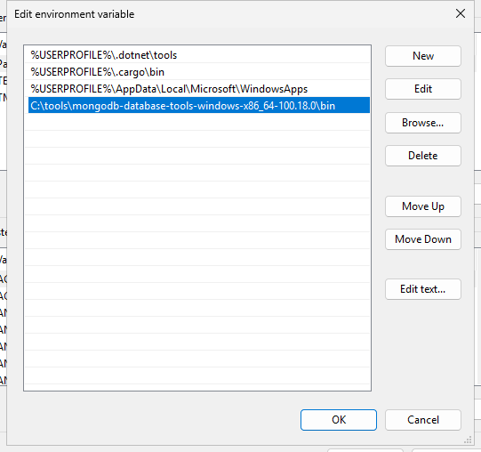
bin из архива Database Tools (в английской Windows — Edit environment variable)Через Homebrew: brew tap mongodb/brew, brew trust mongodb/brew и brew install mongodb-database-tools. Без второй команды свежий Homebrew откажется ставить формулу: Refusing to load formula … from untrusted tap mongodb/brew. Проверка: mongoimport --version.
Со страницы mongodb.com/try/download/database-tools скачайте пакет .deb или .rpm для вашего дистрибутива и установите его (sudo apt install ./mongodb-database-tools-….deb). Проверка: mongoimport --version.
Загружать двенадцать файлов по одному не нужно: в папке stend лежат скрипты, которые проходят по всем файлам и берут имена базы и коллекции из имени файла.
powershell -ExecutionPolicy Bypass -File stend\load.ps1
# другой адрес сервера:
powershell -ExecutionPolicy Bypass -File stend\load.ps1 -Uri mongodb://localhost:27018
hh.companies <- hh.companies.json hh.interviews <- hh.interviews.json hh.resumes <- hh.resumes.json hh.vacancies <- hh.vacancies.json logs.events <- logs.events.json org.categories <- org.categories.json org.employees <- org.employees.json sandbox.products <- sandbox.products.json sandbox.warehouse <- sandbox.warehouse.json shop.customers <- shop.customers.json shop.orders <- shop.orders.json shop.products <- shop.products.json Готово. Проверка в Compass: база shop, коллекция orders — 120 документов.
Флаг -ExecutionPolicy Bypass разрешает запустить этот скрипт один раз, не меняя настроек Windows: без него PowerShell по умолчанию отказывается выполнять файлы .ps1.
bash stend/load.sh
# другой адрес сервера:
MONGO_URI=mongodb://localhost:27018 bash stend/load.sh
mongoimport не найден локально — работаем через контейнер course-mongo
hh.companies ← hh.companies.json
hh.interviews ← hh.interviews.json
hh.resumes ← hh.resumes.json
hh.vacancies ← hh.vacancies.json
logs.events ← logs.events.json
org.categories ← org.categories.json
org.employees ← org.employees.json
sandbox.products ← sandbox.products.json
sandbox.warehouse ← sandbox.warehouse.json
shop.customers ← shop.customers.json
shop.orders ← shop.orders.json
shop.products ← shop.products.json
Готово. Проверка:
mongosh "mongodb://localhost:27017" --quiet --eval 'db.getSiblingDB("shop").orders.countDocuments()' # 120
Первая строка появилась потому, что кадр снят на компьютере без mongoimport: load.sh в таком случае сам берёт утилиту из запущенного контейнера со стендом. Если mongoimport установлен, этой строки не будет, а остальной вывод совпадёт.
Внутри скрипта для каждого файла выполняется одна и та же команда. Её полезно знать и саму по себе — например, чтобы перезагрузить одну коллекцию:
mongoimport --db shop --collection orders --file stend\seed\shop.orders.json --jsonArray --drop
mongoimport --db shop --collection orders --file stend/seed/shop.orders.json --jsonArray --drop
[ … ], а не документы по одному на строку. Без флага импорт падает.обязательно_id.для повтораАдрес сервера не указан — mongoimport по умолчанию подключается к mongodb://localhost:27017. Другой задаётся флагом --uri.
§7Способ 3. Вручную через Compass
Если нет ни Docker, ни mongoimport, но сервер и Compass работают, файлы загружаются мышью. На кадрах ниже — пустой сервер, на который загружаем первую коллекцию, shop.products.
- Подключитесь к серверуОткройте подключение к
mongodb://localhost:27017. Если учебных баз ещё нет, в списке только три служебные:admin,config,local.
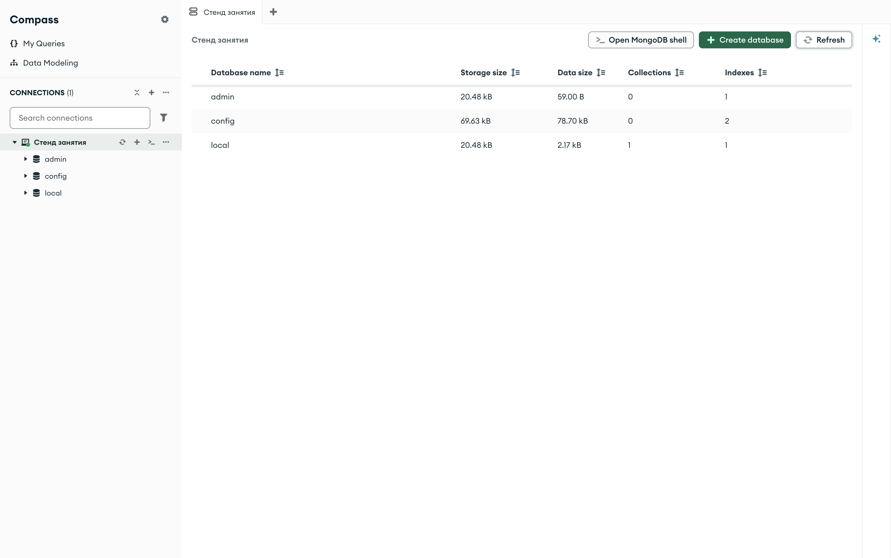
- Создайте базу и первую коллекциюКнопка Create database справа вверху. В поле Database Name — имя базы из файла, в Collection Name — имя коллекции. Для
shop.products.jsonэтоshopиproducts. Compass не создаёт пустую базу без коллекции, поэтому оба поля обязательны. Галочку Time-Series не ставьте.
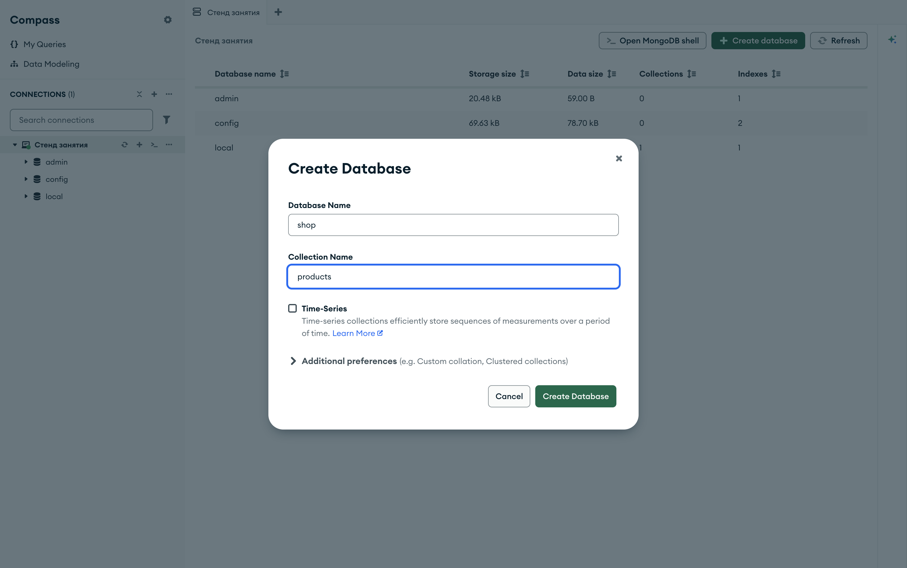
shop, коллекция products- Откройте импортОткройте новую коллекцию: щёлкните по
productsпод базойshopв левой панели. Коллекция пустая — нажмите Add data → Import JSON or CSV file или кнопку Import data посередине.
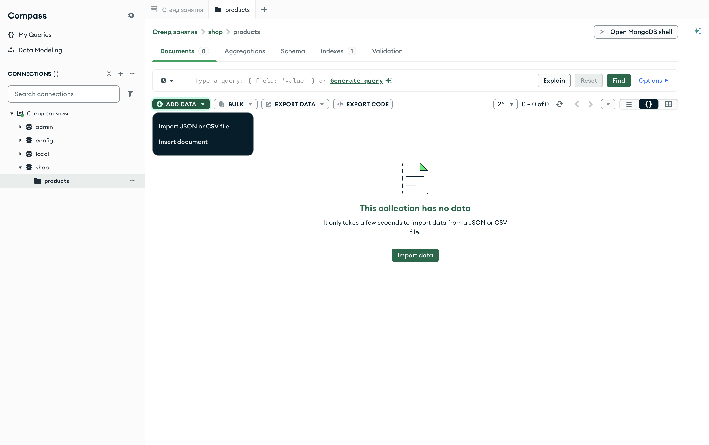
shop.products пока пустая — меню Add data- Выберите файлОткроется окно выбора файла вашей системы. Найдите в папке репозитория
stend/seed/shop.products.json. Проверьте строку To collection: коллекция должна совпадать с именем файла. Stop on errors можно не отмечать.
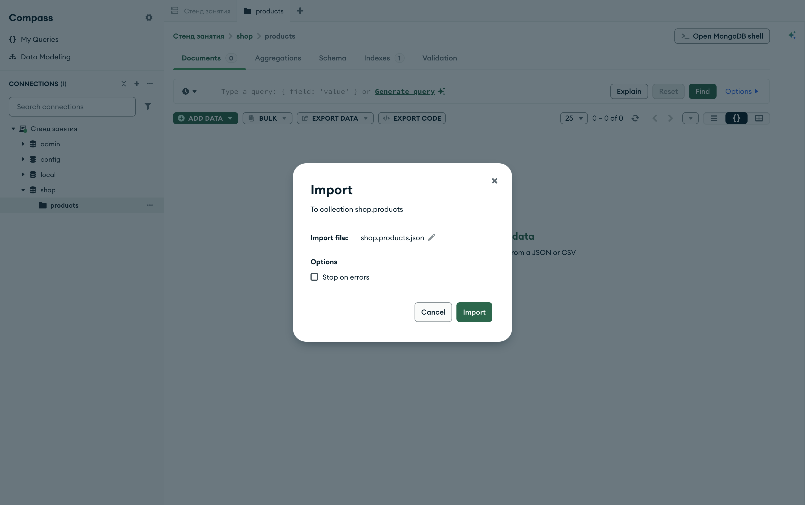
shop.products.json в коллекцию shop.products- Нажмите ImportВнизу слева появится сообщение Import completed. 21 documents imported., а в коллекции — 21 документ.
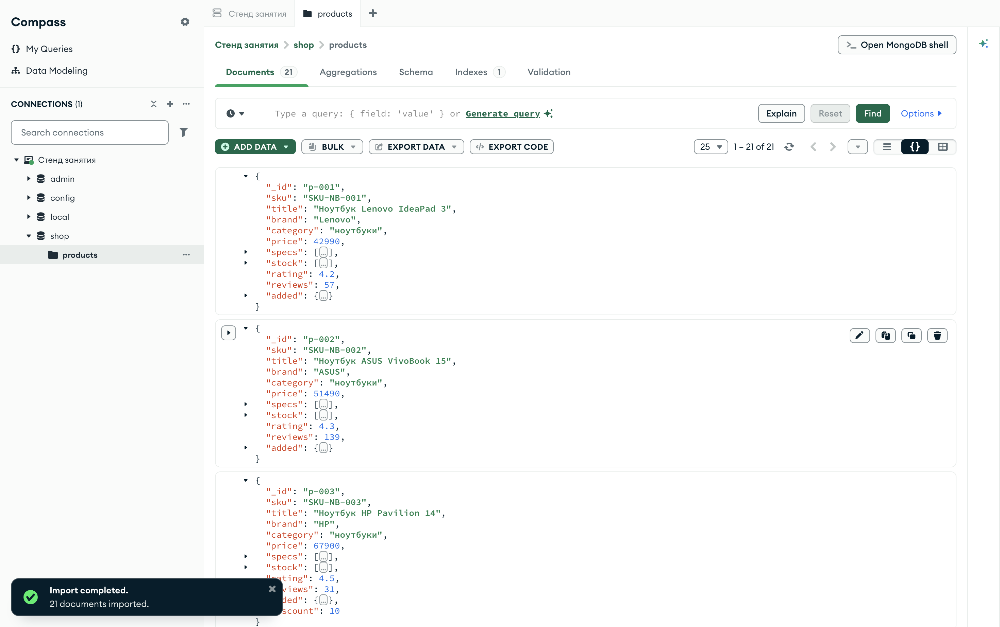
Посмотрите на поле added на кадре: Compass показывает его свёрнутым, и внутри уже дата, а не объект с $date. Это и есть работа Extended JSON из §2.
Остальные одиннадцать файлов загружаются так же. Если база уже есть, создавать её заново не нужно: наведите на неё в левой панели, нажмите + и создайте только коллекцию.
| Файл | Database Name | Collection Name | Документов после импорта |
|---|---|---|---|
shop.products.json | shop | products | 21 |
shop.orders.json | shop | orders | 120 |
shop.customers.json | shop | customers | 20 |
hh.companies.json | hh | companies | 8 |
hh.interviews.json | hh | interviews | 60 |
hh.resumes.json | hh | resumes | 9 |
hh.vacancies.json | hh | vacancies | 8 |
logs.events.json | logs | events | 1200 |
org.categories.json | org | categories | 10 |
org.employees.json | org | employees | 15 |
sandbox.products.json | sandbox | products | 21 |
sandbox.warehouse.json | sandbox | warehouse | 21 |
Повторный импорт в коллекцию, где документы уже есть, их не заменяет: у каждого документа свой _id, и Compass сообщит Import completed 0/21 with errors: E11000 duplicate key error… — ни один документ не добавится. Чтобы загрузить коллекцию заново, сначала удалите её: ⋯ рядом с коллекцией в левой панели → Drop collection. Скрипт из §6 делает это сам флагом --drop.
§8Проверить, что всё загрузилось
После любого способа нажмите в Compass Refresh в списке баз. Должно быть восемь строк: пять учебных баз и три служебные.
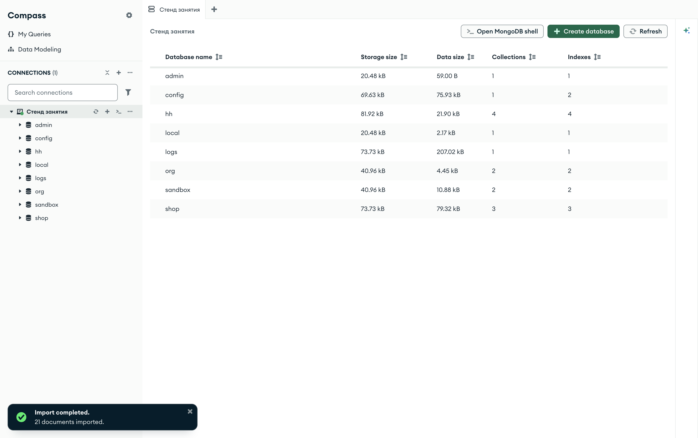
Надёжнее сверить число документов в каждой коллекции с таблицей из §1. Для этого не нужен установленный mongosh: в Compass есть встроенная оболочка — кнопка Open MongoDB shell над списком баз. Вставьте туда одну строку:
for (const d of ['shop','hh','logs','org','sandbox']) for (const c of db.getSiblingDB(d).getCollectionNames().sort()) print(d + '.' + c + ' ' + db.getSiblingDB(d)[c].countDocuments())
shop.customers 20 shop.orders 120 shop.products 21 hh.companies 8 hh.interviews 60 hh.resumes 9 hh.vacancies 8 logs.events 1200 org.categories 10 org.employees 15 sandbox.products 21 sandbox.warehouse 21
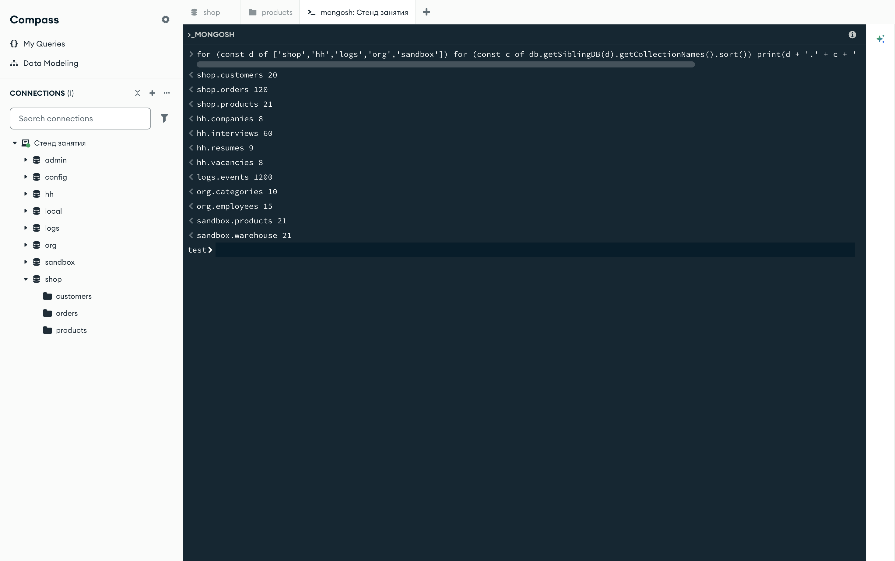
Текст склеивается в одну строку внутри print не для красоты: встроенная оболочка Compass печатает каждый аргумент print с новой строки, и вызов print(имя, число) там выдал бы двадцать четыре строки вместо двенадцати.
Двенадцать строк, и числа совпадают с таблицей — данные на месте, можно переходить к главе 1.1. Не хватает строки — коллекцию забыли или назвали иначе. Если вы уже проходили главы 1.6–1.7, в sandbox будут ещё bench, orders и product_stats — их создают заготовки этих глав, это нормально. Число больше ожидаемого — файл загрузили дважды, коллекцию нужно удалить и загрузить снова.
§9Рабочее место: драйвер и первый запуск
Данные на месте. Осталось подготовить то, чем вы будете к ним обращаться: драйвер своего языка и папку, где лежат заготовки примеров. Язык выбирается кнопкой «драйвер» вверху страницы, система — кнопкой «система»: команды ниже меняются вместе с ними.
В скачанном репозитории всё уже разложено по папкам:
mongodb-practice/
ch1_2.py … ch1_8.cpp — по файлу на главу и языкcheck.pycheck.pyШаг 1. Поставить драйвер
Команды выполняются в терминале из корня репозитория — из папки mongodb-practice.
python -m pip install pymongo
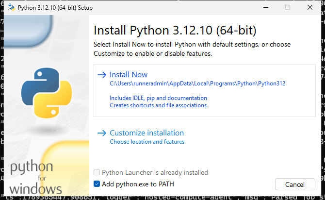
Если PowerShell отвечает, что python не найден, поставьте Python с python.org и отметьте в установщике Add python.exe to PATH, затем откройте новый терминал.
python3 -m venv .venv source .venv/bin/activate pip install pymongo
Виртуальное окружение .venv — отдельная папка с Python и драйвером только для этого репозитория: системный Python на macOS и в свежих Linux не даёт ставить пакеты напрямую. В каждом новом терминале окружение включается снова: source .venv/bin/activate. Если venv не найден — sudo apt install python3-venv.
gem install mongo
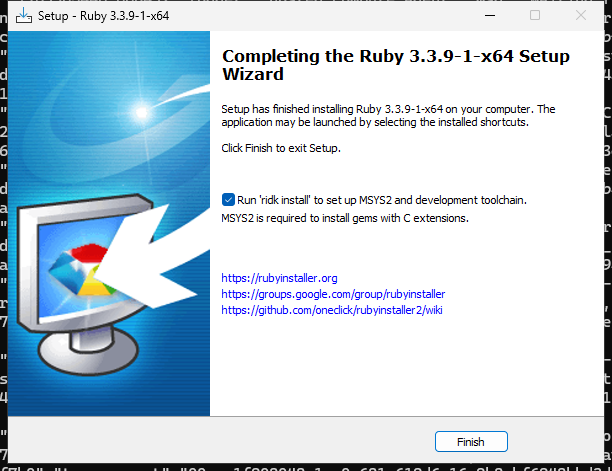
Ruby ставится с rubyinstaller.org — сборка with Devkit: драйверу нужен компилятор для расширения bson.
gem install --user-install mongo
sudo apt install ruby-full build-essential gem install --user-install mongo
cd lessons go mod download
Go ставится с go.dev/dl. Отдельно драйвер ставить не нужно: в папке lessons уже лежит go.mod, и go mod download скачивает всё, что в нём перечислено.
brew install mongo-cxx-driver
docker compose run --rm cpp hello/hello.cpp
Драйвер C++ на Windows и Linux собирается из исходников долго и с зависимостями. Проще запускать код в готовом контейнере стенда — глава 1.1а: первая сборка образа занимает несколько минут, дальше запуск идёт за секунды.
Шаг 2. Проверить подключение
В папке hello лежит программа, которая подключается к серверу и печатает, что на нём есть. Если она отработала — драйвер стоит и данные на месте.
python hello/hello.py
python3 hello/hello.py
ruby hello/hello.rb
cd hello go run hello.go
g++ -std=c++17 hello/hello.cpp -o hello/hello $(pkg-config --cflags --libs libmongocxx1) ./hello/hello
docker compose run --rm cpp hello/hello.cpp
Адрес: mongodb://localhost:27017/ Сервер: 7.0.40 Базы данных: ['admin', 'config', 'hh', 'local', 'logs', 'org', 'sandbox', 'shop'] Коллекции shop: ['customers', 'orders', 'products'] Товаров: 21 Заказов: 120
Адрес: mongodb://localhost:27017 Сервер: 7.0.40 Базы данных: admin config hh local logs org sandbox shop Коллекции shop: customers orders products Товаров: 21 Заказов: 120
Адрес: mongodb://localhost:27017 Сервер: 7.0.40 Базы данных: [admin config hh local logs org sandbox shop] Коллекции shop: [customers orders products] Товаров: 21 Заказов: 120
Адрес: mongodb://localhost:27017/ Сервер: 7.0.40 Базы данных: ["admin", "config", "hh", "local", "logs", "org", "sandbox", "shop"] Коллекции shop: ["customers", "orders", "products"] Товаров: 21 Заказов: 120
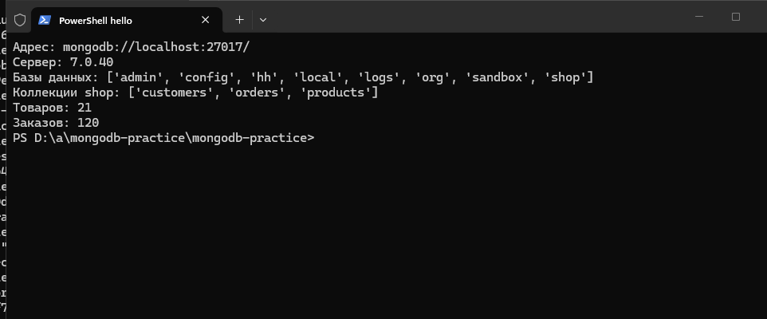
python hello/hello.py из корня репозитория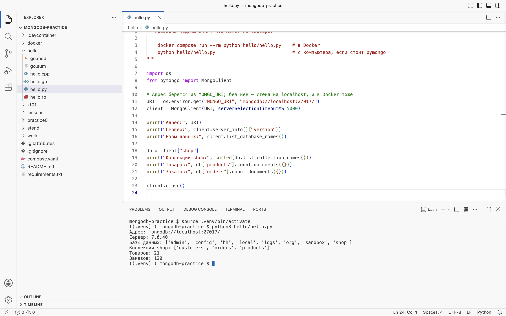
hello/hello.py и его запуск в терминале">hello/hello.py и его запуск в терминале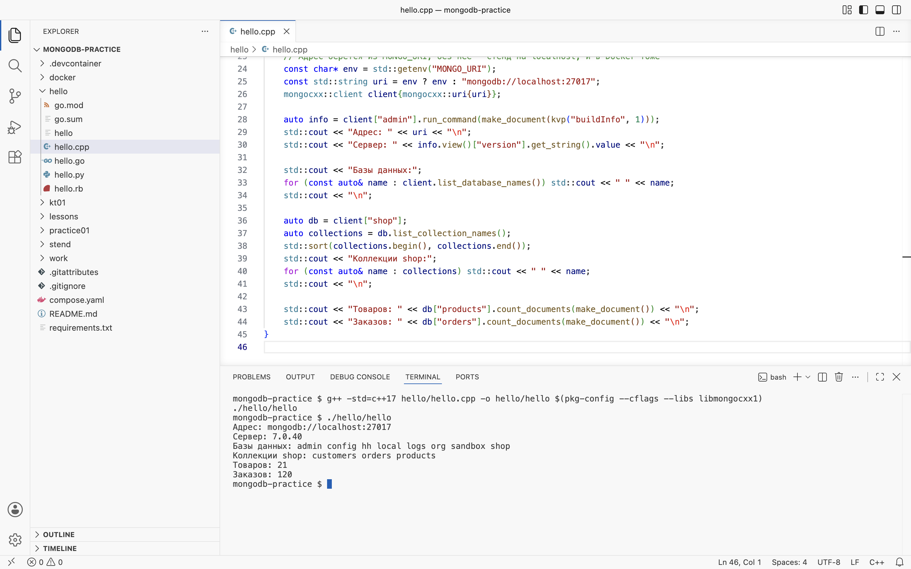
hello/hello.cpp и его запуск в терминале">hello/hello.cpp и его запуск в терминале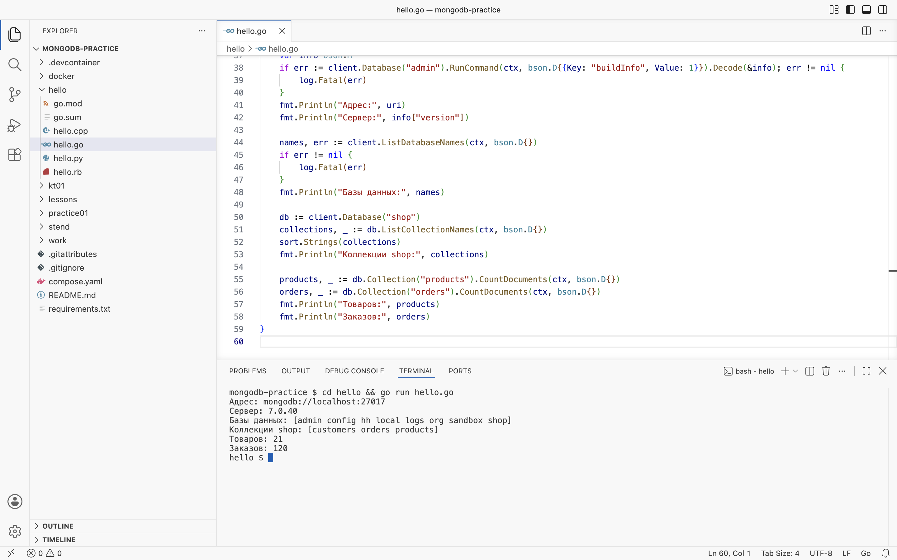
hello/hello.go и его запуск в терминале">hello/hello.go и его запуск в терминале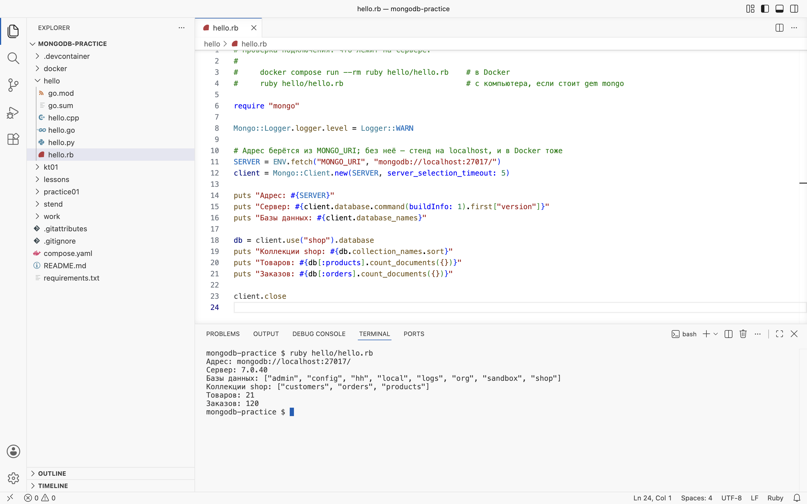
hello/hello.rb и его запуск в терминале">hello/hello.rb и его запуск в терминалеНе ставится ничего — запускайте в Docker: docker compose run --rm python hello/hello.py (вместо python — ruby, go или cpp и файл с тем же расширением).
Числа в двух последних строках — те же, что в таблице из §1. Ошибка вместо вывода разобрана в §11.
§10Как запускать примеры из глав
Для каждой главы с кодом в папке lessons есть файл-заготовка: ch1_4.py для главы 1.4 на Python, ch1_4.go — на Go и так далее. В заготовке уже есть подключение и переменные, которыми пользуются примеры главы: client, db, products, orders и box — песочница. Пример из главы вставляется в отмеченное место:
from pymongo import MongoClient
db = client["shop"]
products = db["products"]
orders = db["orders"]
box = client["sandbox"]["products"]
client.admin.command("ping")
print("Заготовка главы 1.4 подключилась…")
db = client.use("shop").database
products = db[:products]
orders = db[:orders]
box = client.use("sandbox").database[:products]
client.database.command(ping: 1)
puts "Заготовка главы 1.4 подключилась…"
type Product struct { … }
client, err := mongo.Connect(…)
db, products, orders, box := …
client.Ping(ctx, nil)
fmt.Println("Заготовка главы 1.4 подключилась…") }
mongocxx::instance instance{};
mongocxx::client client{…};
auto db = …, products = …, orders = …, box = …;
client["admin"].run_command(make_document(kvp("ping", 1)));
std::cout << "Заготовка главы 1.4 подключилась…"; }
Пример, который начинается с func или type, ставится выше main — у отметки «функции и типы из примеров главы». Всё остальное — внутрь фигурных скобок в конце main, вместо проверочных строк.
Пример, который объявляет функцию, ставится выше main — у отметки «функции из примеров главы». Всё остальное — внутрь фигурных скобок в конце main, вместо проверочных строк.
Под отметкой стоят проверочные строки: пока пример не вставлен, заготовка только проверяет связь с сервером. Её можно запустить сразу — командой из шага 3 ниже — и убедиться, что всё работает:
Заготовка главы 1.4 подключилась к серверу. Замените проверочные строки примером из главы.
Если вместо этой строки — ошибка, связи с сервером нет: разбор в §11.
- Проверьте состояние базВ начале каждой главы написано, меняет ли она данные. Если меняет — перед главой верните базы в исходное состояние, как в §8:
docker compose run --rm resetили скрипт из §6. - Вставьте примерСкопируйте пример из главы в отмеченное место заготовки вместо проверочных строк. Следующий пример вставляйте вместо предыдущего, а не под ним: иначе при повторном запуске предыдущий выполнится ещё раз.
- Запустите из папки
lessonsКаждый пример — один раз и по порядку. Именно так получены все выводы в справочнике, поэтому ваш вывод совпадёт с книгой. Отличаться будут только_id, которые выдаёт сервер, текущее время и последняя цифра версии сервера: образmongo:7обновляется, в книге — 7.0.40. В Ruby 3.4 и новее хэш печатается с пробелами вокруг стрелки:{"price" => 42990}, в книге — формат Ruby 3.3,{"price"=>42990}. Необработанное исключение C++ на macOS выглядит иначе, чем в книге:libc++abi: terminating due to uncaught exception of type std::runtime_error: …вместо двух строкterminate called …иwhat(): ….
cd lessons python ch1_4.py
cd lessons python3 ch1_4.py
cd lessons ruby ch1_4.rb
cd lessons go run ch1_4.go
cd lessons g++ -std=c++17 ch1_4.cpp -o ch1_4 $(pkg-config --cflags --libs libmongocxx1) ./ch1_4
docker compose run --rm cpp lessons/ch1_4.cpp
В Docker пример запускается той же командой, что hello: docker compose run --rm python lessons/ch1_4.py. Контейнер сам переходит в папку файла, поэтому пути вида ../stend/seed/… в примерах работают одинаково.
Так выглядит первый пример главы 1.4 — «один документ», вставленный в заготовку и запущенный:
Смартфон Xiaomi Redmi Note 13 18990
Смартфон Xiaomi Redmi Note 13
Смартфон Xiaomi Redmi Note 13 18990
Смартфон Xiaomi Redmi Note 13 18990
Так это выглядит в редакторе: заготовка, пример на своём месте и запуск в терминале из папки lessons.
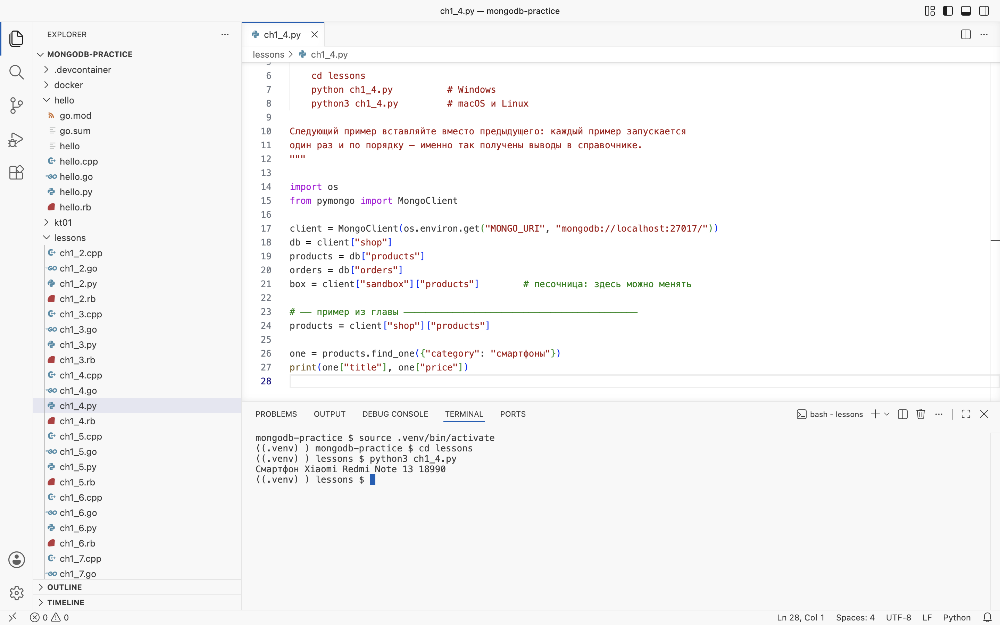
lessons/ch1_4.py и его вывод">lessons/ch1_4.py и его вывод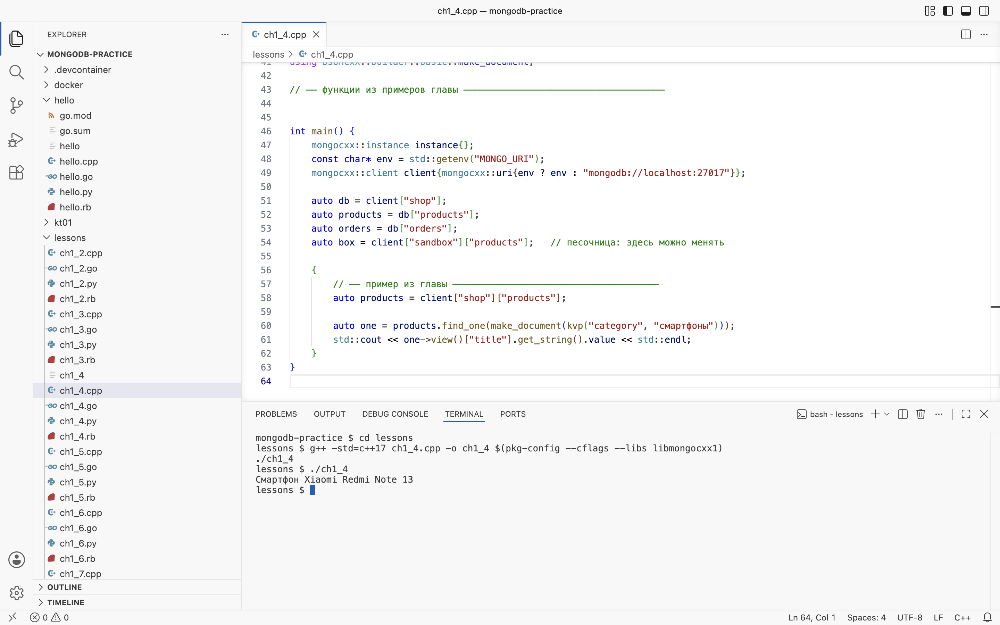
lessons/ch1_4.cpp и его вывод">lessons/ch1_4.cpp и его вывод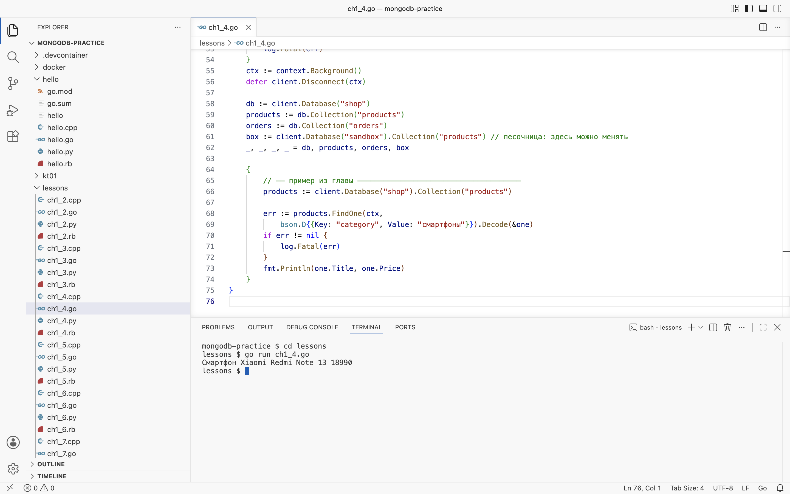
lessons/ch1_4.go и его вывод">lessons/ch1_4.go и его вывод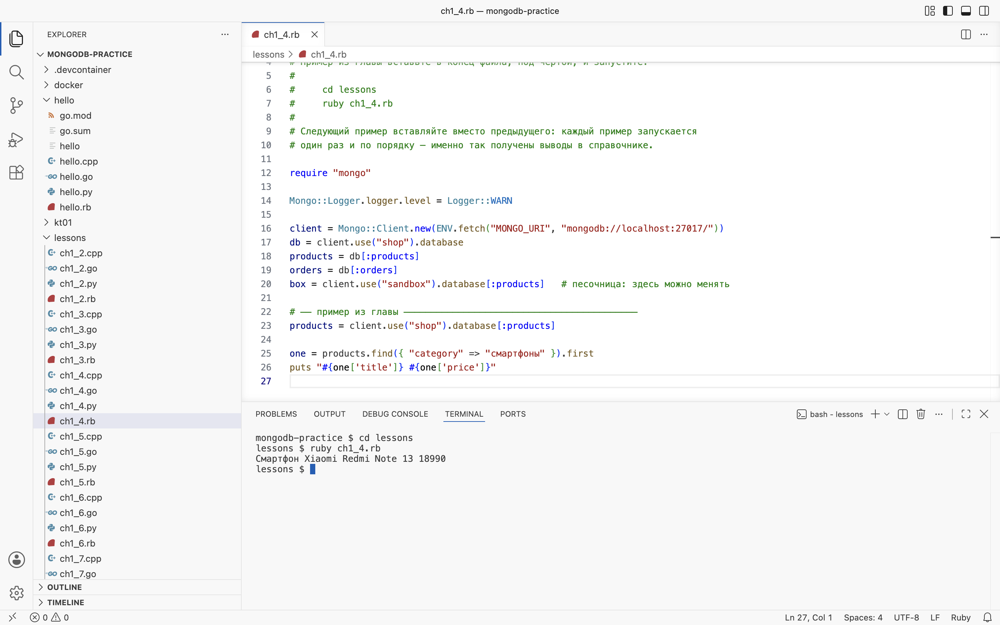
lessons/ch1_4.rb и его вывод">lessons/ch1_4.rb и его вывод§11Частые ошибки
| Что происходит | Что видно | В чём дело |
|---|---|---|
| Драйвер не установлен | ModuleNotFoundError: No module named 'pymongo' | Поставьте драйвер, §9. На macOS и Linux — проверьте, что включено окружение: source .venv/bin/activate |
| Пакет ставится мимо окружения | error: externally-managed-environment | Система не даёт ставить пакеты в свой Python. Создайте и включите .venv, §9 |
| Драйвер не установлен | cannot load such file -- mongo (LoadError) | gem install mongo, §9 |
| Пример вставлен под предыдущим, а не вместо | Числа не совпадают с книгой, в песочнице лишние документы или E11000 | Предыдущий пример выполнился второй раз. Верните базы и пройдите примеры главы заново, по одному |
mongoimport не установлен | mongoimport : The term 'mongoimport' is not recognized… или сообщение load.ps1: «mongoimport не найден» | Установите Database Tools и добавьте папку bin в PATH, затем откройте новый PowerShell. Или загрузите базы через Compass, §7 |
mongoimport не установлен | zsh: command not found: mongoimport | brew tap mongodb/brew, brew trust mongodb/brew, brew install mongodb-database-tools. load.sh без утилиты попробует взять её из контейнера стенда |
mongoimport не установлен | bash: mongoimport: command not found | Установите пакет Database Tools. load.sh без утилиты попробует взять её из контейнера стенда |
| PowerShell не запускает скрипт | load.ps1 cannot be loaded because running scripts is disabled on this system | Запускайте через powershell -ExecutionPolicy Bypass -File stend\load.ps1 — это разрешение на один запуск, права администратора не нужны |
Забыт --jsonArray | Failed: cannot decode array into a D0 document(s) imported successfully. 0 document(s) failed to import. | Файл — массив документов, а mongoimport по умолчанию ждёт по документу на строку |
Повторная загрузка без --drop | E11000 duplicate key error collection: shop.products index: _id_ dup key: { _id: "p-008" }0 document(s) imported successfully. 21 document(s) failed to import. | Документы с такими _id уже есть. Добавьте --drop |
| Повторный импорт в Compass | Import completed 0/21 with errors: E11000 duplicate key error collection: shop.products index: _id_ dup key: { _id: "p-001" }… | Коллекция уже загружена. Нужны свежие данные — ⋯ → Drop collection, затем импорт заново |
| Опечатка в имени базы или коллекции | Импорт прошёл, но примеры из глав возвращают пустой результат | Например, база названа Shop или коллекция product. Имена чувствительны к регистру; удалите коллекцию и загрузите под именем из файла |
| Сервер не запущен | connect ECONNREFUSED 127.0.0.1:27017 в Compass или error connecting to host у mongoimport | На порту 27017 никто не слушает. Запустите службу MongoDB или поднимите стенд в Docker — глава 1.1а |
§12Проверьте себя
В какую базу и коллекцию загружается файл hh.interviews.json?
База hh, коллекция interviews: имя базы стоит до первой точки, имя коллекции — между точками. После загрузки в ней 60 документов.
Зачем в файлах даты записаны как { "$date": "…" }, а не строкой?
В JSON нет типа «дата». Запись $date — формат Extended JSON: mongoimport и Compass превращают её в настоящую дату. Строка так и осталась бы строкой, и сравнение по времени работало бы неправильно.
После упражнений в sandbox.products 19 документов вместо 21. Что делать?
Перезагрузить коллекцию: docker compose run --rm reset в Docker, скрипт из §6 или одна команда mongoimport … --drop. В Compass — удалить коллекцию и импортировать файл заново. Чинить документы руками не нужно.
Вы дважды импортировали shop.orders.json через Compass. Сколько документов окажется в коллекции?
120. Вторая попытка не добавит ни одного: у каждого документа тот же _id, и сервер отклонит дубликаты. Compass покажет Import completed 0/120 with errors, но данные не удвоятся.
§13Шпаргалка
git clone https://github.com/
MaximBytecamp/mongodb-practice.git
# или Code → Download ZIP
docker compose up -d # Docker
bash stend/load.sh # macOS, Linux
powershell -ExecutionPolicy Bypass
-File stend\load.ps1 # Windows
mongoimport --db shop
--collection orders
--file stend/seed/shop.orders.json
--jsonArray --drop
Compass → Refresh: 8 баз
shop.orders — 120 документов
logs.events — 1200 документов
Итог главы
Учебные данные — двенадцать JSON-файлов в stend/seed репозитория практик; имя файла задаёт базу и коллекцию. Загрузить их можно Docker-стендом, скриптом с mongoimport или вручную через Compass — результат одинаковый, и проверяется он числом документов в каждой коллекции. Когда числа сошлись, переходим к главе 1.1: что такое сервер, база и коллекция и как до них дойти из кода.